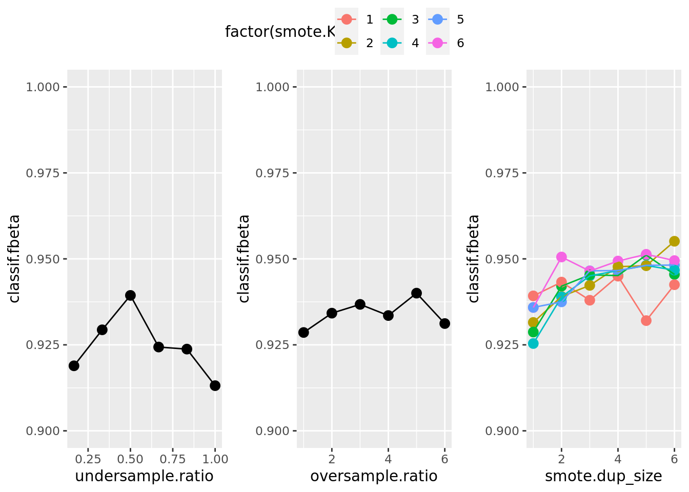

library(mlr3verse)Loading required package: mlr3library(mlr3learners)
library(OpenML)The website features runtime benchmarks of the paradox package now.
Handle imbalanced data with oversampling, undersampling, and SMOTE imbalance correction.
Giuseppe Casalicchio
March 30, 2020
This use case compares different approaches to handle class imbalance for the Optical Recognition of Handwritten Digits (optdigits) binary classification data set using the mlr3 package. We mainly focus on undersampling the majority class, oversampling the minority class, and the SMOTE imbalance correction (Chawla et al. 2002) that enriches the minority class with synthetic data. The use case requires prior knowledge in basic ML concepts (issues imbalanced data, hyperparameter tuning, nested cross-validation). The R packages mlr3, mlr3pipelines and mlr3tuning will be used. You can find most of the content here also in the mlr3book explained in a more detailed way.
These steps are performed:
OpenMLGraphs (undersampling, oversampling and SMOTE) with mlr3pipelinesGraph together with a learner using mlr3tuningGraph and visualize the results using mlr3vizWe load the most important packages for this post.
We initialize the random number generator with a fixed seed for reproducibility, and decrease the verbosity of the logger to keep the output clearly represented.
OpenML.org is an open machine learning platform, which allows users to share data, code and machine learning experiments. The OpenML R package can query available data sets using a filter-like approach by providing desired dataset characteristics like number.of.classes or number.of.features.
# get list of curated binary classification data sets (see https://arxiv.org/abs/1708.03731v2)
ds = listOMLDataSets(
number.of.classes = 2,
number.of.features = c(1, 100),
number.of.instances = c(5000, 10000)
)
# select imbalanced data sets (without categorical features as SMOTE cannot handle them)
ds = subset(ds, minority.class.size / number.of.instances < 0.2 &
number.of.symbolic.features == 1)
ds
# pick one data set from list above
d = getOMLDataSet(980)
dAfter downloading the chosen data set, we create an mlr3 classification task:
Please note that the optdigits dataset is also included in the mlr3data package where you can get the preprocessed (integers properly encoded as such, etc.) data via:
Quick overview of the data:
| Name | task$data() |
| Number of rows | 5620 |
| Number of columns | 65 |
| Key | NULL |
| _______________________ | |
| Column type frequency: | |
| factor | 1 |
| numeric | 64 |
| ________________________ | |
| Group variables | None |
Variable type: factor
| skim_variable | n_missing | complete_rate | ordered | n_unique | top_counts |
|---|---|---|---|---|---|
| binaryclass | 0 | 1 | FALSE | 2 | N: 5048, P: 572 |
Variable type: numeric
| skim_variable | n_missing | complete_rate | mean | sd | p0 | p25 | p50 | p75 | p100 | hist |
|---|---|---|---|---|---|---|---|---|---|---|
| input1 | 0 | 1 | 0.00 | 0.00 | 0 | 0 | 0 | 0 | 0 | ▁▁▇▁▁ |
| input10 | 0 | 1 | 1.97 | 3.10 | 0 | 0 | 0 | 3 | 16 | ▇▁▁▁▁ |
| input11 | 0 | 1 | 10.51 | 5.43 | 0 | 6 | 12 | 15 | 16 | ▃▂▂▂▇ |
| input12 | 0 | 1 | 11.80 | 4.00 | 0 | 9 | 13 | 15 | 16 | ▁▂▂▃▇ |
| input13 | 0 | 1 | 10.51 | 4.79 | 0 | 7 | 11 | 15 | 16 | ▂▂▃▃▇ |
| input14 | 0 | 1 | 8.26 | 5.97 | 0 | 2 | 9 | 14 | 16 | ▇▂▃▃▇ |
| input15 | 0 | 1 | 2.09 | 3.92 | 0 | 0 | 0 | 2 | 16 | ▇▁▁▁▁ |
| input16 | 0 | 1 | 0.14 | 0.94 | 0 | 0 | 0 | 0 | 15 | ▇▁▁▁▁ |
| input17 | 0 | 1 | 0.00 | 0.10 | 0 | 0 | 0 | 0 | 5 | ▇▁▁▁▁ |
| input18 | 0 | 1 | 2.60 | 3.49 | 0 | 0 | 1 | 4 | 16 | ▇▂▁▁▁ |
| input19 | 0 | 1 | 9.68 | 5.83 | 0 | 4 | 12 | 15 | 16 | ▅▂▂▃▇ |
| input2 | 0 | 1 | 0.30 | 0.88 | 0 | 0 | 0 | 0 | 8 | ▇▁▁▁▁ |
| input20 | 0 | 1 | 6.82 | 5.88 | 0 | 1 | 6 | 12 | 16 | ▇▃▂▂▅ |
| input21 | 0 | 1 | 7.16 | 6.15 | 0 | 1 | 6 | 13 | 16 | ▇▂▂▂▆ |
| input22 | 0 | 1 | 7.97 | 6.26 | 0 | 0 | 9 | 14 | 16 | ▇▂▂▃▇ |
| input23 | 0 | 1 | 1.96 | 3.48 | 0 | 0 | 0 | 3 | 16 | ▇▁▁▁▁ |
| input24 | 0 | 1 | 0.05 | 0.44 | 0 | 0 | 0 | 0 | 8 | ▇▁▁▁▁ |
| input25 | 0 | 1 | 0.00 | 0.03 | 0 | 0 | 0 | 0 | 1 | ▇▁▁▁▁ |
| input26 | 0 | 1 | 2.38 | 3.11 | 0 | 0 | 1 | 4 | 16 | ▇▂▁▁▁ |
| input27 | 0 | 1 | 9.19 | 6.15 | 0 | 3 | 11 | 15 | 16 | ▅▂▂▂▇ |
| input28 | 0 | 1 | 9.03 | 5.90 | 0 | 4 | 10 | 15 | 16 | ▅▂▂▃▇ |
| input29 | 0 | 1 | 9.75 | 6.24 | 0 | 3 | 12 | 16 | 16 | ▅▁▂▂▇ |
| input3 | 0 | 1 | 5.39 | 4.67 | 0 | 1 | 5 | 9 | 16 | ▇▃▃▂▂ |
| input30 | 0 | 1 | 7.77 | 5.96 | 0 | 1 | 8 | 14 | 16 | ▇▃▃▃▇ |
| input31 | 0 | 1 | 2.33 | 3.64 | 0 | 0 | 0 | 4 | 16 | ▇▁▁▁▁ |
| input32 | 0 | 1 | 0.00 | 0.06 | 0 | 0 | 0 | 0 | 2 | ▇▁▁▁▁ |
| input33 | 0 | 1 | 0.00 | 0.03 | 0 | 0 | 0 | 0 | 1 | ▇▁▁▁▁ |
| input34 | 0 | 1 | 2.14 | 3.30 | 0 | 0 | 0 | 4 | 15 | ▇▁▁▁▁ |
| input35 | 0 | 1 | 7.66 | 6.28 | 0 | 0 | 8 | 14 | 16 | ▇▂▂▂▇ |
| input36 | 0 | 1 | 9.18 | 6.22 | 0 | 3 | 11 | 16 | 16 | ▅▂▂▂▇ |
| input37 | 0 | 1 | 10.33 | 5.92 | 0 | 6 | 13 | 16 | 16 | ▃▁▂▂▇ |
| input38 | 0 | 1 | 9.05 | 5.88 | 0 | 4 | 10 | 15 | 16 | ▅▂▂▃▇ |
| input39 | 0 | 1 | 2.91 | 3.50 | 0 | 0 | 1 | 6 | 14 | ▇▂▂▁▁ |
| input4 | 0 | 1 | 11.82 | 4.26 | 0 | 10 | 13 | 15 | 16 | ▁▁▂▃▇ |
| input40 | 0 | 1 | 0.00 | 0.00 | 0 | 0 | 0 | 0 | 0 | ▁▁▇▁▁ |
| input41 | 0 | 1 | 0.02 | 0.27 | 0 | 0 | 0 | 0 | 7 | ▇▁▁▁▁ |
| input42 | 0 | 1 | 1.46 | 2.95 | 0 | 0 | 0 | 2 | 16 | ▇▁▁▁▁ |
| input43 | 0 | 1 | 6.59 | 6.52 | 0 | 0 | 4 | 14 | 16 | ▇▁▁▂▅ |
| input44 | 0 | 1 | 7.20 | 6.46 | 0 | 0 | 7 | 14 | 16 | ▇▂▂▂▆ |
| input45 | 0 | 1 | 7.84 | 6.30 | 0 | 1 | 8 | 14 | 16 | ▇▂▂▂▇ |
| input46 | 0 | 1 | 8.53 | 5.77 | 0 | 3 | 9 | 14 | 16 | ▆▂▃▃▇ |
| input47 | 0 | 1 | 3.49 | 4.36 | 0 | 0 | 1 | 7 | 16 | ▇▂▂▁▁ |
| input48 | 0 | 1 | 0.02 | 0.25 | 0 | 0 | 0 | 0 | 6 | ▇▁▁▁▁ |
| input49 | 0 | 1 | 0.01 | 0.25 | 0 | 0 | 0 | 0 | 10 | ▇▁▁▁▁ |
| input5 | 0 | 1 | 11.58 | 4.46 | 0 | 9 | 13 | 15 | 16 | ▁▁▂▃▇ |
| input50 | 0 | 1 | 0.78 | 1.93 | 0 | 0 | 0 | 0 | 16 | ▇▁▁▁▁ |
| input51 | 0 | 1 | 7.75 | 5.66 | 0 | 2 | 8 | 13 | 16 | ▇▃▃▅▇ |
| input52 | 0 | 1 | 9.77 | 5.17 | 0 | 6 | 10 | 15 | 16 | ▃▃▃▃▇ |
| input53 | 0 | 1 | 9.65 | 5.31 | 0 | 5 | 10 | 15 | 16 | ▃▃▃▃▇ |
| input54 | 0 | 1 | 9.12 | 5.97 | 0 | 3 | 11 | 15 | 16 | ▅▂▂▃▇ |
| input55 | 0 | 1 | 3.74 | 4.91 | 0 | 0 | 1 | 7 | 16 | ▇▂▁▁▁ |
| input56 | 0 | 1 | 0.17 | 0.84 | 0 | 0 | 0 | 0 | 13 | ▇▁▁▁▁ |
| input57 | 0 | 1 | 0.00 | 0.02 | 0 | 0 | 0 | 0 | 1 | ▇▁▁▁▁ |
| input58 | 0 | 1 | 0.28 | 0.93 | 0 | 0 | 0 | 0 | 10 | ▇▁▁▁▁ |
| input59 | 0 | 1 | 5.76 | 5.02 | 0 | 1 | 5 | 10 | 16 | ▇▃▃▂▂ |
| input6 | 0 | 1 | 5.59 | 5.63 | 0 | 0 | 4 | 10 | 16 | ▇▂▂▂▃ |
| input60 | 0 | 1 | 11.99 | 4.35 | 0 | 10 | 13 | 15 | 16 | ▁▁▁▃▇ |
| input61 | 0 | 1 | 11.57 | 4.98 | 0 | 9 | 13 | 16 | 16 | ▂▁▁▃▇ |
| input62 | 0 | 1 | 6.72 | 5.82 | 0 | 0 | 6 | 12 | 16 | ▇▂▂▃▅ |
| input63 | 0 | 1 | 2.09 | 4.05 | 0 | 0 | 0 | 2 | 16 | ▇▁▁▁▁ |
| input64 | 0 | 1 | 0.25 | 1.42 | 0 | 0 | 0 | 0 | 16 | ▇▁▁▁▁ |
| input7 | 0 | 1 | 1.38 | 3.36 | 0 | 0 | 0 | 0 | 16 | ▇▁▁▁▁ |
| input8 | 0 | 1 | 0.14 | 1.05 | 0 | 0 | 0 | 0 | 16 | ▇▁▁▁▁ |
| input9 | 0 | 1 | 0.00 | 0.09 | 0 | 0 | 0 | 0 | 5 | ▇▁▁▁▁ |
In mlr3pipelines , there is a class balancing and a smote pipe operator that can be combined with any learner. Below, we define the undersampling, oversampling and SMOTE PipeOps/Graph. All three imbalance correction methods have hyperparameters to control the degree of class imbalance. We apply the PipeOps/Graph to the current task with specific hyperparameter values to see how the class balance changes:
P N
572 5048
P N
572 841
P N
3432 5048 Note that the original SMOTE algorithm only accepts numeric features (see smotefamily::SMOTE). To keep it simple, we therefore preprocess the data and coerce integers to numerics prior to running SMOTE and reverse this afterwards:
# SMOTE enriches the minority class with synthetic data
gr_smote =
po("colapply", id = "int_to_num",
applicator = as.numeric, affect_columns = selector_type("integer")) %>>%
po("smote", dup_size = 6) %>>%
po("colapply", id = "num_to_int",
applicator = function(x) as.integer(round(x, 0L)), affect_columns = selector_type("numeric"))
# enrich minority class by factor (dup_size + 1)
table(gr_smote$train(task)[[1L]]$truth())
P N
4004 5048 AutoTunerWe combine the PipeOps/Graph with a learner (here ranger) to make each pipeline graph behave like a learner:
# create random forest learner
learner = lrn("classif.ranger", num.trees = 50)
# combine learner with pipeline graph
learner_under = as_learner(po_under %>>% learner)
learner_under$id = "undersample.ranger"
learner_over = as_learner(po_over %>>% learner)
learner_over$id = "oversample.ranger"
learner_smote = as_learner(gr_smote %>>% learner)
learner_smote$id = "smote.ranger"We define the search space in order to tune the hyperparameters of the class imbalance methods.
# define parameter search space for each method
search_space_under = ps(undersample.ratio = p_dbl(1 / 6, 1))
search_space_over = ps(oversample.ratio = p_dbl(1, 6))
search_space_smote = ps(
smote.dup_size = p_int(1, 6),
smote.K = p_int(1, 6),
# makes sure we use numbers to the power of two to better explore the parameter space
.extra_trafo = function(x, param_set) {
x$smote.K = round(2^(x$smote.K))
x
}
)We create an AutoTuner class from the learner to tune the graph (random forest learner + imbalance correction method) based on a 3-fold cross-validation using the F-beta Score as performance measure. To keep runtime low, we define the search space only for the imbalance correction method. However, one can also jointly tune the hyperparameter of the learner along with the imbalance correction method by extending the search space with the learner’s hyperparameters. Note that SMOTE has two hyperparameters K and dup_size. While K changes the behavior of the SMOTE algorithm, dup_size will affect oversampling rate. To focus on the effect of the oversampling rate on the performance, we will consider SMOTE with K = 2 as a different imbalance correction method as SMOTE with K = 4 (and so on). Hence, we use grid search with 5 different hyperparameter configurations for the undersampling method, the oversampling method and each SMOTE variant for tuning:
inner_cv3 = rsmp("cv", folds = 3)
measure = msr("classif.fbeta")
learns = list(
auto_tuner(
tuner = tnr("grid_search", resolution = 6),
learner = learner_under,
resampling = inner_cv3,
measure = measure,
search_space = search_space_under
),
auto_tuner(
tuner = tnr("grid_search", resolution = 6),
learner = learner_over,
resampling = inner_cv3,
measure = measure,
search_space = search_space_over
),
auto_tuner(
tuner = tnr("grid_search", resolution = 6),
learner = learner_smote,
resampling = inner_cv3,
measure = measure,
search_space = search_space_smote
)
)AutoTunerThe AutoTuner is a fully tuned graph that behaves like a usual learner. For the tuning a 3-fold CV is used. Now, we use the benchmark() function to compare the tuned class imbalance pipeline graphs based on a holdout for the outer evaluation:
task learner resampling
1: optdigits undersample.ranger.tuned holdout
2: optdigits oversample.ranger.tuned holdout
3: optdigits smote.ranger.tuned holdout nr task_id learner_id resampling_id iters classif.fbeta
1: 1 optdigits undersample.ranger.tuned holdout 1 0.9453552
2: 2 optdigits oversample.ranger.tuned holdout 1 0.9508197
3: 3 optdigits smote.ranger.tuned holdout 1 0.9539295
Hidden columns: resample_resultWith store_models = TRUE we allow the benchmark() function to store each single model that was computed during tuning. Therefore, we can plot the tuning path of the best learner from the subsampling iterations:
library(ggplot2)
bmr_data_learners = as.data.table(bmr)$learner
utune_path = bmr_data_learners[[1]]$model$tuning_instance$archive$data
utune_gg = ggplot(utune_path, aes(x = undersample.ratio, y = classif.fbeta)) +
geom_point(size = 3) +
geom_line() + ylim(0.9, 1)
otune_path = bmr_data_learners[[2]]$model$tuning_instance$archive$data
otune_gg = ggplot(otune_path, aes(x = oversample.ratio, y = classif.fbeta)) +
geom_point(size = 3) +
geom_line() + ylim(0.9, 1)
stune_path = bmr_data_learners[[3]]$model$tuning_instance$archive$data
stune_gg = ggplot(stune_path, aes(
x = smote.dup_size,
y = classif.fbeta, col = factor(smote.K))) +
geom_point(size = 3) +
geom_line() + ylim(0.9, 1)
library(ggpubr)
ggarrange(utune_gg, otune_gg, stune_gg, common.legend = TRUE, nrow = 1)
The results show that oversampling the minority class (for simple oversampling as well as for SMOTE) and undersampling the majority class yield a better performance for this specific data set.
In this post, we tuned and compared 5 different settings of sampling ratios for the undersampling method, the oversampling method and different SMOTE variants (using different values of K nearest neighbors during the sampling process). If you want to know more, read the mlr3book and the documentation of the mentioned packages.